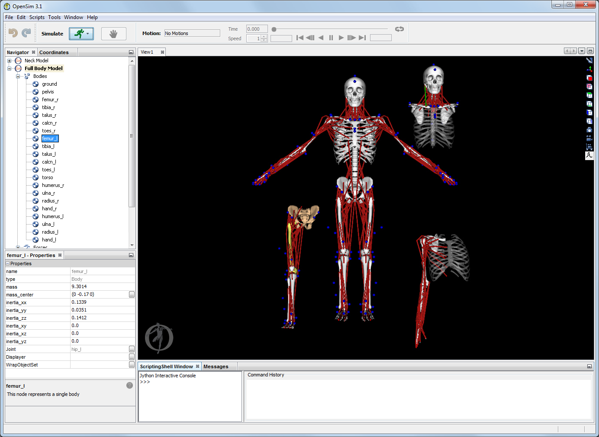

This page provides an introduction to the capabilities and features of OpenSim and how to get started:
What is OpenSim?
OpenSim is a freely available software package that enables you to build, exchange, and analyze computer models of the musculoskeletal system and dynamic simulations of movement. OpenSim version 1.0 was introduced at the American Society of Biomechanics Conference in 2007, and with version 2.0, an application programming interface (API) has been added, allowing researchers to access and customize OpenSim core functionality. Since the initial release, thousands of people have begun to use the software in a wide variety of applications, including biomechanics research, medical device design, orthopedics and rehabilitation science, neuroscience research, ergonomic analysis and design, sports science, computer animation, robotics research, biology, and education.
The software provides a platform on which the biomechanics community can build a library of simulations that can be exchanged, tested, analyzed, and improved through multi-institutional collaboration. The core software is written in C++, and the graphical user interface (GUI) is written in Java. OpenSim plug-in technology makes it possible to develop customized controllers, analyses, contact models, and muscle models among other things. These plugins can be shared without the need to alter or compile source code. You can analyze existing models and simulations and develop new models and simulations from within the GUI.
Open-source, third-party tools are used for some basic functionality, including the the Visualization Toolkit from Kitware for visualization (www.vtk.org). Use of plug-in technology allows computational components such as integrators and optimizers to be updated as appropriate without extensive restructuring. The GUI is written in Java and is built on the Netbeans Platform (Netbeans.org).
Capabilities
OpenSim includes a wide variety of features. You can find out about them by completing the tutorials and browsing this user guide. Some of the most useful features include:
- Taking pictures of musculoskeletal models and making animated movies: Snapshots and Movies
- Plotting results of your analysis: Plotting
- Scaling the size of a musculoskeletal model: Scaling
- Performing inverse kinematics analyses to calculate joint angles from marker positions: Inverse Kinematics
- Performing inverse dynamics analyses to calculate joint moments from joint angles and external forces: Inverse Dynamics
- Generating forward dynamics simulations of movement: Forward Dynamics
- Analyzing dynamic simulations: Analyses
Model and Simulation Repository
You can create your own models of musculoskeletal structures and dynamic simulations of movement in OpenSim, as well as take advantage of computer models and dynamic simulations that other users have developed and shared. For example, you can use existing computer models of the human lower limb, upper limb, cervical spine, and whole body which have already been developed and posted at Simtk.org. You can also use dynamic simulations of walking and other activities that have been developed, tested and posted on Simtk.org.
A collection of many of these models can be found in the Musculoskeletal Models library.
We encourage you to share your models and simulations so that other researchers can build on your results. This will greatly accelerate research. Please set up a project on Simtk.org to share your results.
Compatibility with Simbody
OpenSim is built on top of the Simbody library, an open-source multibody dynamics engine developed to create mathematical models of biological dynamics. Simbody is being developed by Simbios, an NIH National Center for Biomedical Computation based at Stanford University. The purpose of Simbios is to enable groundbreaking biomedical research by providing open access to high-quality tools for modeling and simulating biological structures.
Simbody comes bundled with the LAPACK linear algebra library, IPOpt optimizer, in addition to the multibody dynamics engine. Simbody software and documentation are available at http://simtk.org/home/simbody.
Compatibility with SIMM
SIMM (Software for Interactive Musculoskeletal Modeling) from Motion Analysis Corp. is a widely used software application for biomechanical simulation, surgical planning, and ergonomic analysis. The joint (.jnt) and muscle (.msl) files used by SIMM to describe models of the musculoskeletal system can be converted into OpenSim models (*.osim) and brought into the OpenSim framework.
OpenSim complements and augments the functionality of SIMM and the SIMM Dynamics Pipeline by providing advanced simulation and control capabilities. In addition, the object-oriented, modular design of OpenSim allows users to extend its functionality and share functionality with other OpenSim users.
OpenSim is a self-contained modeling and simulation environment that does not require additional software components or licenses to generate dynamic simulations.
OpenSim provides a graphical user interface (GUI) that provides access to many of the software features. For example, you can import motion analysis data, scale a computer model of the musculoskeletal system, perform inverse dynamics analysis, and plot results all from the graphical interface.
The OpenSim GUI

Screenshot from OpenSim. Models of many different musculoskeletal structures, including the lower extremity, upper extremity, and neck, can be loaded, viewed and analyzed. Muscles are shown as red lines; virtual markers are shown as blue spheres.
How to Get Started
It's easy to get started with OpenSim. The instructions in the next section (Installation Guide) explain how to download and install the software on your computer.
The installation process generally takes less than a few minutes. The tutorials (see Examples and Tutorials), which come with the software, are an easy way to get started. Each tutorial takes about an hour to complete and covers a different aspect of the software and biomechanics.
Hundreds of people, from high school biology students to university professors, have completed these tutorials. More resources are also available on the website http://opensim.stanford.edu.
Next: What’s Covered in this Manual
Home: Introducing OpenSim
{kind=link}